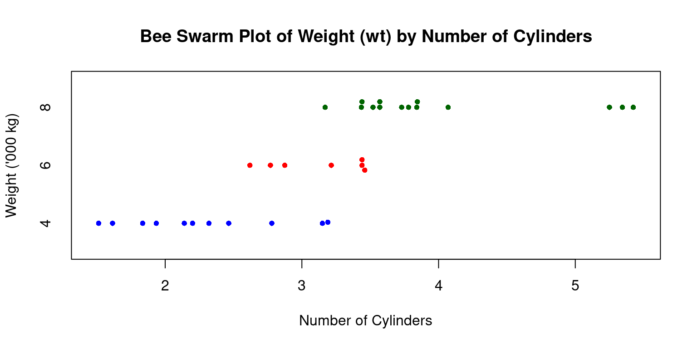
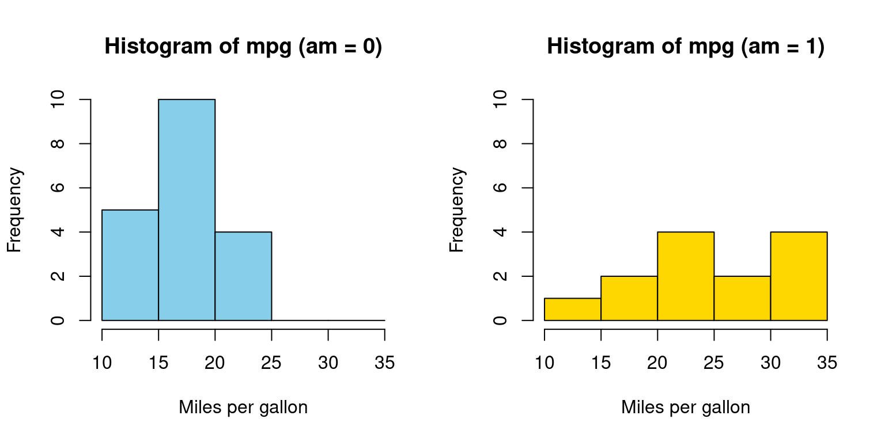
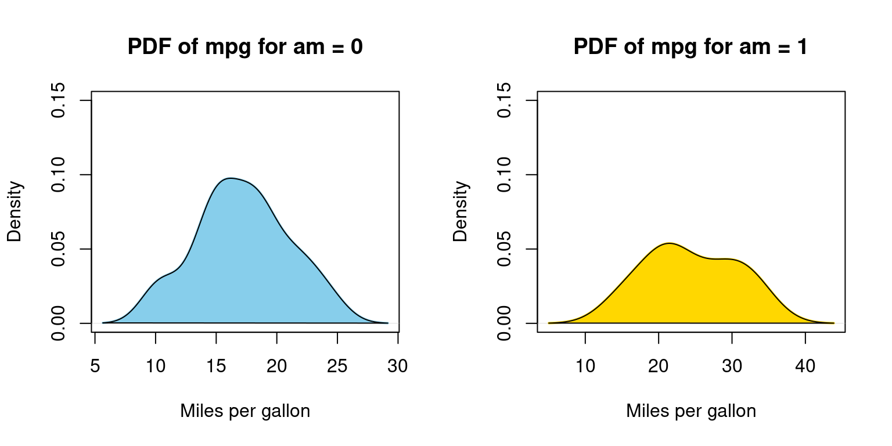
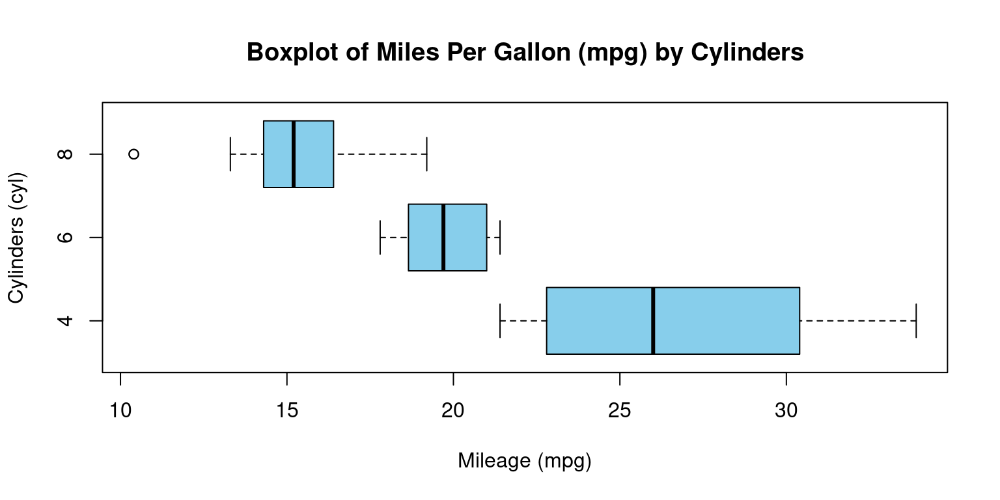
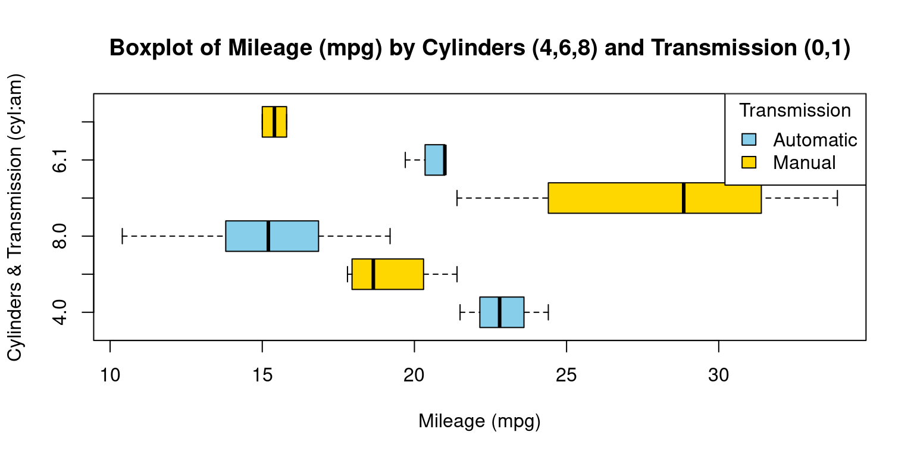
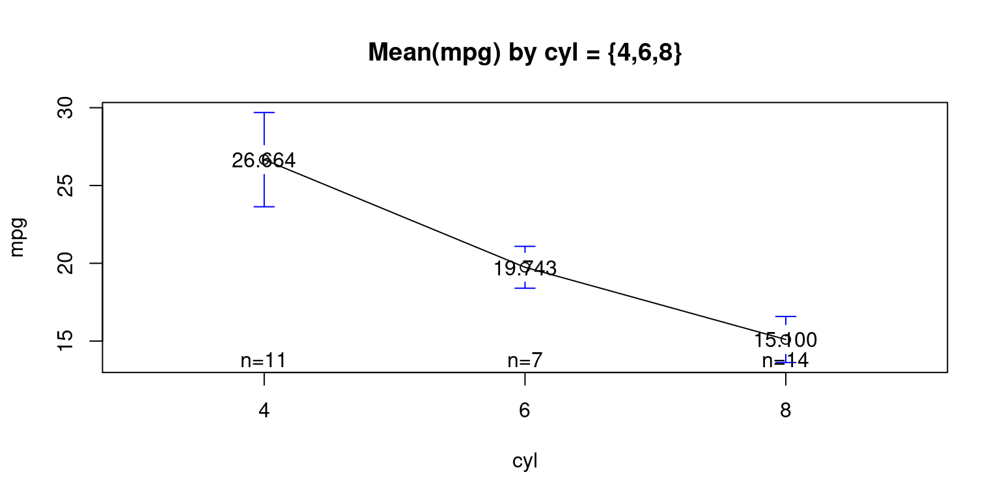
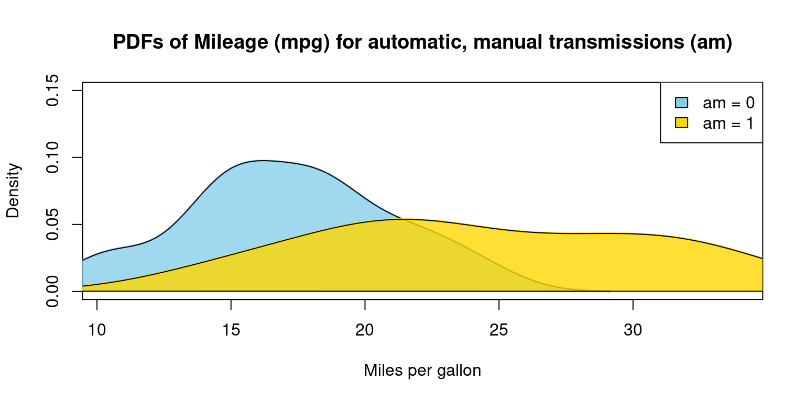
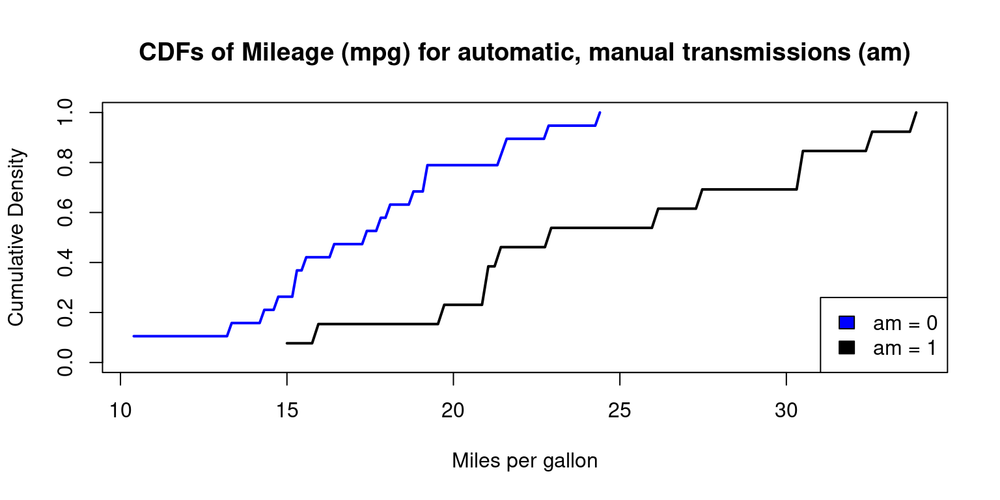

# Load the required libraries, suppressing annoying startup messages
library(dplyr, quietly = TRUE, warn.conflicts = FALSE)
library(tibble, quietly = TRUE, warn.conflicts = FALSE)
library(knitr) # For formatting tables
# Read the mtcars dataset into a tibble called tb
data(mtcars)
tb <- as_tibble(mtcars)
# Convert relevant columns into factor variables
tb$cyl <- as.factor(tb$cyl) # cyl = {4,6,8}, number of cylinders
tb$am <- as.factor(tb$am) # am = {0,1}, 0:automatic, 1: manual transmission
tb$vs <- as.factor(tb$vs) # vs = {0,1}, v-shaped engine, 0:no, 1:yes
tb$gear <- as.factor(tb$gear) # gear = {3,4,5}, number of gears
# Directly access the data columns of tb, without tb$mpg
attach(tb)Categorical x Continuous data (1 of 2)
Aug 13, 2023
THIS CHAPTER explores Categorical x Continuous data. It explains how to summarize and visualize bivariate continuous data across categories. Here, we delve into the intersection of continuous data and categorical variables, examining how the former can be split, summarized, and compared across different levels of one or more categorical variables.
We bring to light methods for generating statistics per group and data manipulation techniques. This includes processes like grouping, filtering, and summarizing continuous data, contingent on categorical variables. We visualize such data by creating juxtaposed box plots, segmented histograms, and density plots that reveal the distribution of continuous data across varied categories.
Data: Suppose we run the following code to prepare the
mtcarsdata for subsequent analysis and save it in a tibble calledtb.
Summarizing Continuous Data
Across one Category
- We review the use of the inbuilt functions (i)
aggregate(); (ii)tapply(); and the function (iii)describeBy()from packagepysch, to summarize continuous data split across a category.
- Using
aggregate()
- We use the
aggregate()function to investigate the bivariate relationship between mileage (mpg) and number of cylinders (cyl). The following code displays a summary table showing the average mileage of the cars broken down by number of cylinders (cyl= 4, 6, 8) usingaggregate().
A0 <- aggregate(tb$mpg,
by = list(tb$cyl),
FUN = mean)
names(A0) <- c("Cylinders", "Mean_mpg")
kable(A0, digits=2, caption = "Mean of Mileage (mpg) by Cylinder (cyl=4,6,8)") | Cylinders | Mean_mpg |
|---|---|
| 4 | 26.66 |
| 6 | 19.74 |
| 8 | 15.10 |
- Discussion:
The first argument in
aggregate()is the data vectortb$mpg.The second argument,
by, denotes a list of variables to group by. Here, we have suppliedtb$cyl, since we wish to partition our data based on the unique values ofcyl.The third argument,
FUN, is the function we want to apply to each subset of data. We are usingmeanhere, calculating the average mpg for each uniquecylvalue. We can alternately aggregate based on a variety of statistical functions includingsum,median,min,max,sd,var,length,IQR.The output of
aggregate()is saved in a new tibble namedagg. We utilize thenames()function to rename the columns and displayagg. [1]
- Using
tapply()
- The
tapply()function is another convenient tool to apply a function to subsets of a vector, grouped by some factors.
A1 <- tapply(tb$mpg,
tb$cyl,
mean)
A1 4 6 8
26.66364 19.74286 15.10000 - Discussion:
In this code,
tapply(tb$mpg, tb$cyl, mean)calculates the average miles per gallon (mpg) for each unique number of cylinders (cyl) within thetbtibble.tb$mpgrepresents the vector to which we want to apply the function.tb$cylserves as our grouping factor.meanis the function that we’re applying to each subset of our data.The result will be a vector where each element is the average
mpgfor a unique number of cylinders (cyl), as determined by the unique values oftb$cyl. [1]
- Using
describeBy()from packagepsych
- The
describeBy()function, part of thepsychpackage, can be used to compute descriptive statistics of a numeric variable, broken down by levels of a grouping variable.
library(psych)
A2 <- describeBy(mpg, cyl)
print(A2)
Descriptive statistics by group
group: 4
vars n mean sd median trimmed mad min max range skew kurtosis se
X1 1 11 26.66 4.51 26 26.44 6.52 21.4 33.9 12.5 0.26 -1.65 1.36
------------------------------------------------------------
group: 6
vars n mean sd median trimmed mad min max range skew kurtosis se
X1 1 7 19.74 1.45 19.7 19.74 1.93 17.8 21.4 3.6 -0.16 -1.91 0.55
------------------------------------------------------------
group: 8
vars n mean sd median trimmed mad min max range skew kurtosis se
X1 1 14 15.1 2.56 15.2 15.15 1.56 10.4 19.2 8.8 -0.36 -0.57 0.68- Discussion:
describeBy(mpg, cyl)computes descriptive statistics of miles per gallonmpgvariable, broken down by the unique values in the number of cylinders (cyl).It calculates statistics such as the mean, sd, median, for
mpg, separately for each unique number of cylinders (cyl). [2]
Across two Categories
We extend the above discussion and study how to summarize continuous data split across two categories.
We review the use of the inbuilt functions (i)
aggregate()and the function (ii)describeBy()from packagepysch. While thetapply()function can theoretically be employed for this task, the resulting code tends to be long and lacks efficiency. Therefore, we opt to exclude it from practical use.
- Using
aggregate()
- Distribution of Mileage (
mpg) by Cylinders (cyl= {4,6,8}) and Transmisson Type (am= {0,1})
B0 <- aggregate(tb$mpg,
by = list(tb$cyl, tb$am),
FUN = mean)
names(B0) <- c("Cylinders","Transmission","Mean_mpg")
kable(B0,
digits=2, caption = "Mean of Mileage (mpg) by Cylinders (cyl=4,6,8) and Transmission (am=0,1)") | Cylinders | Transmission | Mean_mpg |
|---|---|---|
| 4 | 0 | 22.90 |
| 6 | 0 | 19.12 |
| 8 | 0 | 15.05 |
| 4 | 1 | 28.08 |
| 6 | 1 | 20.57 |
| 8 | 1 | 15.40 |
- Discussion:
In our code, the first argument of
aggregate()istb$mpg, indicating that we want to perform computations on thempgvariable.The by argument is a list of variables by which we want to group our data, specified as
list(tb$cyl, tb$am). This means that separate computations are done for each unique combination ofcylandam.The
FUNargument indicates the function to be applied to each subset of our data. Here, we use mean, meaning that we compute the mean mpg for each group.
- Using
aggregate()for multiple continuous variables: Consider this extension of the above code for calculating the mean of three variables -mpg,wt, andhp, grouped by both am and cyl variables:
- Distribution of Mileage (
mpg), Weight (wt), Horsepower (hp) by Cylinders (cyl= {4,6,8}) and Transmisson Type (am= {0,1})
B1 <- aggregate(list(tb$mpg, tb$wt, tb$hp),
by = list(tb$am, tb$cyl),
FUN = mean)
names(B1) <- c("Transmission","Cylinders","Mean_mpg","Mean_wt","Mean_hp")
kable(B1,
digits=2, caption = "Mean of Mileage (mpg), Weight (wt), Horsepower (hp) by Transmission (am=0,1) and Cylinders (cyl=4,6,8)") | Transmission | Cylinders | Mean_mpg | Mean_wt | Mean_hp |
|---|---|---|---|---|
| 0 | 4 | 22.90 | 2.94 | 84.67 |
| 1 | 4 | 28.08 | 2.04 | 81.88 |
| 0 | 6 | 19.12 | 3.39 | 115.25 |
| 1 | 6 | 20.57 | 2.76 | 131.67 |
| 0 | 8 | 15.05 | 4.10 | 194.17 |
| 1 | 8 | 15.40 | 3.37 | 299.50 |
- Discussion:
In this code, the
aggregate()function takes a list of the three variables as its first argument, indicating that the mean should be calculated for each of these variables separately within each combination ofamandcyl.The sequence of the categorizing variables also varies - initially, the data is grouped by
cyl, followed by a subdivision based onam.
- Using
aggregate()with multiple functions: Consider an extension of the above code for calculating the mean and the SD ofmpg, grouped by bothamandcylfactor variables:
- Distribution of Mileage (
mpg), by Cylinders (cyl= {4,6,8}) and Transmission Type (am= {0,1})
agg_mean <- aggregate(tb$mpg,
by = list(tb$cyl, tb$am),
FUN = mean)
agg_sd <- aggregate(tb$mpg,
by = list(tb$cyl, tb$am),
FUN = sd)
agg_median <- aggregate(tb$mpg,
by = list(tb$cyl, tb$am),
FUN = median)
# Merge them together, two data frames at a time
B2 <- merge(agg_mean, agg_sd,
by = c("Group.1", "Group.2"))
B2 <- merge(B2, agg_median,
by = c("Group.1", "Group.2"))
# Rename columns for clarity
names(B2) <- c("Cylinders", "Transmission", "Mean_mpg", "SD_mpg", "Median_mpg")
kable(B2,
digits=2, caption = "Mean, SD, Median of Mileage (mpg) by Cylinders (cyl=4,6,8) and Transmission (am=0,1)") | Cylinders | Transmission | Mean_mpg | SD_mpg | Median_mpg |
|---|---|---|---|---|
| 4 | 0 | 22.90 | 1.45 | 22.80 |
| 4 | 1 | 28.08 | 4.48 | 28.85 |
| 6 | 0 | 19.12 | 1.63 | 18.65 |
| 6 | 1 | 20.57 | 0.75 | 21.00 |
| 8 | 0 | 15.05 | 2.77 | 15.20 |
| 8 | 1 | 15.40 | 0.57 | 15.40 |
- Discussion:
We analyze our dataset to comprehend the relationships between vehicle miles per gallon (
mpg), number of cylinders (cyl), and type of transmission (am).Initially, we computed the mean, standard deviation, and median of
mpgfor every unique combination ofcylandam.After individual computations, we combined these results into a single, comprehensive data frame called
merged_data. This structured dataset now clearly presents the average, variability, and median of fuel efficiency segmented by cylinder count and transmission type.
- Using
describeBy()from packagepsych
- The
describeBy()function, part of thepsychpackage, can be used to compute descriptive statistics of continuous variable, broken down by levels of a two categorical varaibles. Consider the following code:
tb_columns <- tb[c("mpg", "wt", "hp")]
tb_factors <- list(tb$am,
tb$cyl)
# Use describeBy()
B3 <- describeBy(tb_columns,
tb_factors)
print(B3)
Descriptive statistics by group
: 0
: 4
vars n mean sd median trimmed mad min max range skew kurtosis
mpg 1 3 22.90 1.45 22.80 22.90 1.93 21.50 24.40 2.90 0.07 -2.33
wt 2 3 2.94 0.41 3.15 2.94 0.06 2.46 3.19 0.73 -0.38 -2.33
hp 3 3 84.67 19.66 95.00 84.67 2.97 62.00 97.00 35.00 -0.38 -2.33
se
mpg 0.84
wt 0.24
hp 11.35
------------------------------------------------------------
: 1
: 4
vars n mean sd median trimmed mad min max range skew kurtosis
mpg 1 8 28.08 4.48 28.85 28.08 4.74 21.40 33.90 12.50 -0.21 -1.66
wt 2 8 2.04 0.41 2.04 2.04 0.36 1.51 2.78 1.27 0.35 -1.15
hp 3 8 81.88 22.66 78.50 81.88 20.76 52.00 113.00 61.00 0.14 -1.81
se
mpg 1.59
wt 0.14
hp 8.01
------------------------------------------------------------
: 0
: 6
vars n mean sd median trimmed mad min max range skew kurtosis
mpg 1 4 19.12 1.63 18.65 19.12 1.04 17.80 21.40 3.60 0.48 -1.91
wt 2 4 3.39 0.12 3.44 3.39 0.01 3.21 3.46 0.25 -0.73 -1.70
hp 3 4 115.25 9.18 116.50 115.25 9.64 105.00 123.00 18.00 -0.09 -2.33
se
mpg 0.82
wt 0.06
hp 4.59
------------------------------------------------------------
: 1
: 6
vars n mean sd median trimmed mad min max range skew kurtosis
mpg 1 3 20.57 0.75 21.00 20.57 0.00 19.70 21.00 1.30 -0.38 -2.33
wt 2 3 2.76 0.13 2.77 2.76 0.16 2.62 2.88 0.25 -0.12 -2.33
hp 3 3 131.67 37.53 110.00 131.67 0.00 110.00 175.00 65.00 0.38 -2.33
se
mpg 0.43
wt 0.07
hp 21.67
------------------------------------------------------------
: 0
: 8
vars n mean sd median trimmed mad min max range skew
mpg 1 12 15.05 2.77 15.20 15.10 2.30 10.40 19.20 8.80 -0.28
wt 2 12 4.10 0.77 3.81 4.04 0.41 3.44 5.42 1.99 0.85
hp 3 12 194.17 33.36 180.00 193.50 40.77 150.00 245.00 95.00 0.28
kurtosis se
mpg -0.96 0.80
wt -1.14 0.22
hp -1.44 9.63
------------------------------------------------------------
: 1
: 8
vars n mean sd median trimmed mad min max range skew kurtosis
mpg 1 2 15.40 0.57 15.40 15.40 0.59 15.00 15.80 0.8 0 -2.75
wt 2 2 3.37 0.28 3.37 3.37 0.30 3.17 3.57 0.4 0 -2.75
hp 3 2 299.50 50.20 299.50 299.50 52.63 264.00 335.00 71.0 0 -2.75
se
mpg 0.4
wt 0.2
hp 35.5- Discussion:
We specify a subset of the dataframe
tbthat includes only the columns of interest –mpg,wt, andhpand save it into a variabletb_columns.Next, we create a list,
tb_factors, that contains the factorsamandcyl.After that, we call the
describeBy()function from thepsychpackage. This function calculates descriptive statistics for each combination of levels of the factorsamandcyland for each of the continuous variablesmpg,wt, andhp.
Visualizing Continuous Data
Let’s take a closer look at some of the most effective ways of visualizing univariate continuous data, including
Bee Swarm plots;
Stem-and-Leaf plots;
Histograms;
PDF and CDF Density plots;
Box plots;
Violin plots;
Q-Q plots.
Bee Swarm Plot
We extend a Bee Swarm plot of a one-dimensional scatter plot for a continuous variable, split by a categorical variable. [6]
Consider the following code, which generates a beeswarm plot displaying vehicle weights (
wt) segmented by their number of cylinders (cyl):
# Load the beeswarm package
library(beeswarm)
# Create a bee swarm plot of wt column split by cyl
beeswarm(tb$wt ~ tb$cyl,
main="Bee Swarm Plot of Weight (wt) by Cylinders (cyl=4,6,8)",
xlab="Number of Cylinders",
ylab="Weight ('000 kg)",
pch=16, # type of points
cex=0.8, # size of the points
col=c("blue","red","darkgreen"),
horizontal = TRUE)
- Discussion:
Data: We use tb\(wt ~ tb\)cyl to specify that we want a beeswarm plot for Weight (
wt), split by no of cylinders (cyl),Title: It is labeled “Bee Swarm Plot of Weight (wt) by Number of Cylinders”.
Axes Labels: The x-axis shows “Number of Cylinders”, while the y-axis denotes “Weight (’000 kg)”.
Data Points: Using
pch=16, data points appear as solid circles.Size of Points: With
cex=0.8, these circles are slightly smaller than default.Colors: The
colparameter assigns colors (“blue”, “red”, and “dark green”) based on cylinder counts.Orientation: Set as horizontal with
horizontal=TRUE.To summarize, this visual distinguishes vehicle weights across cylinder counts and highlights data point densities for each group.
Stem-and-Leaf Plot across one Category
Suppose we wanted to visualize the distribution of a continuous variable across different levels of a categorical variable, using stem-and-leaf plots.
To illustrate, let us display vehicle weights (
wt) separately for each transmission type (am) using stem-and-leaf plots.
# Choose 'wt' and 'cyl' columns from 'tb' dataframe. Assign the result to 'tb3'.
tb3 <- tb[, c("wt", "am")]
# Split the 'tb3' tibble into subsets based on 'am'. Each subset consists of rows with the same 'am' value. Save the list of these subsets to 'tb_split'.
tb_split <- split(tb3, tb3$am)
# Apply a function to each subset of 'tb_split' using 'lapply()'.
# The function takes a subset 'x' and creates a stem-and-leaf plot of the 'wt' values in 'x'.
lapply(tb_split,
function(x)
stem(x$wt))
The decimal point is at the |
2 | 5
3 | 22244445567888
4 | 1
5 | 334
The decimal point is at the |
1 | 5689
2 | 123
2 | 6889
3 | 2
3 | 6$`0`
NULL
$`1`
NULL- Discussion:
Column Selection: The code extracts the
wt(weight) andam(transmission type) columns fromtband saves them intb3.Data Splitting: It then divides
tb3into subsets based onamvalues, resulting in separate groups for each transmission type.Visualization: Using
lapply(), the code generates stem-and-leaf plots for thewtvalues in each subset, showcasing weight distributions for different transmission types. In this context, it shows the distribution of vehicle weights for each transmission type (automatic and manual).
Histograms across one Category
- Visualizing histograms of car mileage (
mpg) broken down by transmission (am=0,1)
split_data <- split(tb$mpg, tb$am) # Split the data by 'am' variable
par(mfrow = c(1, 2)) # Create a 1-row 2-column layout
color_vector <- c("skyblue", "gold") # Define the color vector
# Create a histogram for subset with am = 0
hist(split_data[[1]],
main = "Histogram of mpg (am = 0)",
breaks = seq(10, 35, by = 5), # This creates bins with ranges 10-15, 15-20, etc.
xlab = "Miles per gallon",
col = color_vector[1], # Use the color vector,
border = "black",
ylim = c(0, 10))
# Create a histogram for subset with am = 1
hist(split_data[[2]],
main = "Histogram of mpg (am = 1)",
breaks = seq(10, 35, by = 5), # This creates bins with ranges 10-15, 15-20, etc.
xlab = "Miles per gallon",
col = color_vector[2], # Use the color vector,
border = "black",
ylim = c(0, 10))
In Appendix A1, we have alternative code written using a for loop
- Discussion:
We aim to visualize the distribution of the
mpgvalues from thetbdataset based on theamvariable, which can be either 0 or 1.Data Splitting: We segregate
mpgvalues into two subsets using thesplitfunction, depending on theamvalues. In R, the double brackets [[ ]] are used to access the elements of a list or a specific column of a data frame.split_data[[1]]accesses the first element of the listsplit_data.Layout Setting: The
parfunction is configured to display two plots side by side in a single row and two columns format.
Color Vector: We introduce a
color_vectorto assign distinct colors to each histogram for differentiation.Histogram: Two histograms are generated, one for each
amvalue (0 and 1). These histograms use various parameters like title, x-axis label, color, and y-axis limits to provide a clear representation of the data’s distribution. [4]
Probability Density Function (PDF) across one Category
- Visualizing Probability Density Functions (PDF) of car mileage (
mpg) broken down by transmission (am=0,1)
split_data <- split(tb$mpg, tb$am) # Split 'mpg' data by 'am' values
par(mfrow = c(1, 2)) # Set layout for 2 plots side by side
color_vector <- c("skyblue", "gold") # Define colors for the plots
# Calculate density for am = 0 and plot it
dens_0 <- density(split_data[[1]])
plot(dens_0,
main = "PDF of mpg for am = 0",
xlab = "Miles per gallon",
col = color_vector[1],
border = "black",
ylim = c(0, 0.15),
lwd = 2) # Plot density curve for am = 0
polygon(dens_0, col = color_vector[1], border = "black") # Fill under the curve
# Calculate density for am = 1 and plot it
dens_1 <- density(split_data[[2]])
plot(dens_1,
main = "PDF of mpg for am = 1",
xlab = "Miles per gallon",
col = color_vector[2],
border = "black",
ylim = c(0, 0.15),
lwd = 2) # Plot density curve for am = 1
polygon(dens_1, col = color_vector[2], border = "black") # Fill under the curve
In Appendix A2, we have alternative code written using a for loop
- Discussion:
dens_0 <- density(split_data[[1]])calculates the density values for the subset whereamis 0.The subsequent plot function visualizes the density curve, setting various parameters like the title, x-axis label, color, and line width.
The polygon function fills the area under the density curve with the specified color, giving a shaded appearance to the plot.
The process is repeated for the subset where
amis 1. The code calculates the density, plots it, and then uses the polygon function to shade the area under the curve.
In Appendix A3, we demonstrate how to draw overlapping PDFs on the same plot, using base R functions.
Cumulative Density Function (CDF) across one Category
In Appendix A4, we demonstrate how to draw a CDF, using base R functions
Box Plots across one Category
- Visualizing Median using Box Plot – median weight of the cars broken down by cylinders (
cyl=4,6,8)
boxplot(mpg~cyl,
main = "Boxplot of Mileage (mpg) by Cylinders (cyl=4,6,8)",
xlab = "Mileage (mpg)",
ylab = "Cylinders (cyl)",
col = c("skyblue"),
horizontal = TRUE
)
- Discussion:
This code creates a visual representation of the distribution of miles per gallon (
mpg) based on the number of cylinders (cyl), using theboxplotfunction from the base graphics package in R. down:Data Input: The formula
mpg ~ cylinstructs R to create separate boxplots for each unique value ofcyl, with each boxplot representing the distribution ofmpgvalues for that particular cylinder count.Title Configuration:
mainspecifies the title of the plot as “Boxplot of Miles Per Gallon (mpg) by Cylinders.”Axis Labels: The labels for the x-axis and y-axis are set using
xlabandylab, respectively. Here,xlablabels the mileage (ormpg), whileylablabels the number of cylinders (cyl).Color Choice: The
colargument is set to “skyblue,” which colors the body of the boxplots in a light blue shade.Orientation: By setting
horizontaltoTRUE, the boxplots are displayed in a horizontal orientation rather than the default vertical orientation.In essence, we’re visualizing the variations in car mileage based on the number of cylinders using horizontal boxplots. This type of visualization helps in understanding the central tendency, spread, and potential outliers of mileage for different cylinder counts.
- Visualizing Median using Box Plot – median weight of the cars broken down by cylinders (
cyl=4,6,8) and Transmission (am=0,1)
boxplot(mpg ~ cyl * am,
main = "Boxplot of Mileage (mpg) by Cylinders (4,6,8) and Transmission (0,1)",
xlab = "Mileage (mpg)",
ylab = "Cylinders & Transmission (cyl:am)",
col = c("skyblue", "gold"), # added a second color for differentiation
horizontal = TRUE
)
# Add a legend
legend("topright",
legend = c("Automatic", "Manual"),
fill = c("skyblue", "gold"),
title = "Transmission"
)
- Discussion:
This R code presents a horizontal boxplot showcasing the distribution of mileage (
mpg) based on the interaction between the number of car cylinders (cyl) and the type of transmission (am).Boxplot Creation: The
boxplotfunction is used to generate the visualization. With the formulampg ~ cyl * am, we plot the distribution ofmpgfor every combination ofcylandam.Color Configuration: The
colargument specifies the colors for the boxplots. We’ve opted for “skyblue” and “gold” for differentiation. Depending on the order of factor levels in your data, one color typically represents one level ofam(e.g., automatic) and the other color represents the second level (e.g., manual).Orientation: The
horizontalargument, set toTRUE, orients the boxplots horizontally.Legend Addition: Following the boxplot, we add a legend using the
legendfunction. Placed at the “topright” position, this legend differentiates between “Automatic” and “Manual” transmissions using the designated colors.In essence, our code generates a detailed visualization that elucidates the mileage distribution for various combinations of cylinder counts and transmission types in cars.
Means Plot across one Category
Visualizing Means – mean plot showing the average weight of the cars, broken down by transmission (am= 0 or 1)
library(gplots)
Attaching package: 'gplots'The following object is masked from 'package:stats':
lowessplotmeans(data = tb,
mpg ~ cyl,
mean.labels = TRUE,
digits=3,
main = "Mean(mpg) by cyl = {4,6,8}"
)
Means Plot across two Categories
We show a mean plot showing the mean weight of the cars broken down by Transmission Type (am= 0 or 1) & cylinders (cyl = 4,6,8).
library(gplots)
plotmeans(mpg ~ interaction(am,
cyl,
sep = ", "),
data = tb,
mean.labels = TRUE,
digits=2,
connect = FALSE,
main = "Mean (mpg) by cyl = {4,6,8} & am = {0,1}",
xlab= "cyl = {4,6,8} & am = {0,1}",
ylab="Average MPG"
)
References
[1] R Core Team (2021). R: A language and environment for statistical computing. R Foundation for Statistical Computing, Vienna, Austria. URL https://www.R-project.org/.
Fox, J. and Weisberg, S. (2011). An R Companion to Applied Regression, Second Edition. Thousand Oaks CA: Sage.
[2] Revelle, W. (2020). psych: Procedures for Psychological, Psychometric, and Personality Research. Northwestern University, Evanston, Illinois. R package version 2.0.9. https://CRAN.R-project.org/package=psych
[3] Chambers, J. M., Freeny, A. E., & Heiberger, R. M. (1992). Analysis of variance; designed experiments. In Statistical Models in S (pp. 145–193). Pacific Grove, CA: Wadsworth & Brooks/Cole.
[4] Venables, W. N., & Ripley, B. D. (2002). Modern Applied Statistics with S (4th ed.). Springer.
Appendix
Appendix A1
Visualizing histograms of car mileage (mpg) broken down by transmission (am=0,1)
Code written using a for loop
# Split the data by 'am' variable
split_data <- split(tb$mpg, tb$am)
# Create a 1-row 2-column layout
par(mfrow = c(1, 2))
# Define the color vector
color_vector <- c("skyblue", "gold")
# Create a histogram for each subset
for (i in 1:length(split_data)) {
hist(split_data[[i]],
main = paste("Histogram of mpg for am =", i - 1),
breaks = seq(10, 35, by = 5), # This creates bins with ranges 10-15, 15-20, etc.
xlab = "Miles per gallon",
col = color_vector[i], # Use the color vector,
border = "black",
ylim = c(0, 10))
}Appendix A2
Visualizing Probability Density Function (PDF) of car milegage (mpg) broken down by transmission (am=0,1), using for loop
# Split the data by 'am' variable
split_data <- split(tb$mpg, tb$am)
# Create a 1-row 2-column layout
par(mfrow = c(1, 2))
# Define the color vector
color_vector <- c("skyblue", "gold")
# Create a density plot for each subset
for (i in 1:length(split_data)) {
# Calculate density
dens <- density(split_data[[i]])
# Plot density
plot(dens,
main = paste("PDF of mpg for am =", i - 1),
xlab = "Miles per gallon",
col = color_vector[i],
border = "black",
ylim = c(0, 0.15), # Adjust this value if necessary
lwd = 2) # line width
# Add a polygon to fill under the density curve
polygon(dens, col = color_vector[i], border = "black")
}Appendix A3
Visualizing Probability Density Function (PDF) of car milegage (mpg) broken down by transmission (am=0,1), overlapping PDFs on the same plot
# Split the data by 'am' variable
split_data <- split(tb$mpg, tb$am)
# Define the color vector
color_vector <- c("skyblue", "gold")
# Define the legend labels
legend_labels <- c("am = 0", "am = 1")
# Create a density plot for each subset
# Start with an empty plot with ranges accommodating both data sets
plot(0, 0, xlim = range(tb$mpg), ylim = c(0, 0.15), type = "n",
xlab = "Miles per gallon", ylab = "Density",
main = "PDFs of Mileage (mpg) for automatic, manual transmissions (am)")
for (i in 1:length(split_data)) {
# Calculate density
dens <- density(split_data[[i]])
# Add density plot
lines(dens,
col = color_vector[i],
lwd = 2) # line width
# Add a polygon to fill under the density curve
polygon(dens, col = adjustcolor(color_vector[i], alpha.f = 0.8), border = "black")
}
# Add legend to the plot
legend("topright", legend = legend_labels, fill = color_vector, border = "black")
Appendix A4
# Split the data by 'am' variable
split_data <- split(tb$mpg, tb$am)
# Define the color vector
color_vector <- c("blue", "black")
# Define the legend labels
legend_labels <- c("am = 0", "am = 1")
# Create a cumulative density plot for each subset
# Start with an empty plot with ranges accommodating both data sets
plot(0, 0, xlim = range(mtcars$mpg), ylim = c(0, 1), type = "n",
xlab = "Miles per gallon", ylab = "Cumulative Density",
main = "CDFs of Mileage (mpg) for automatic, manual transmissions (am)")
for (i in 1:length(split_data)) {
# Calculate empirical cumulative density function
ecdf_func <- ecdf(split_data[[i]])
# Add CDF plot using curve function
curve(ecdf_func(x),
from = min(split_data[[i]]), to = max(split_data[[i]]),
col = color_vector[i],
add = TRUE,
lwd = 2) # line width
}
# Add legend to the plot
legend("bottomright", legend = legend_labels, fill = color_vector, border = "black")